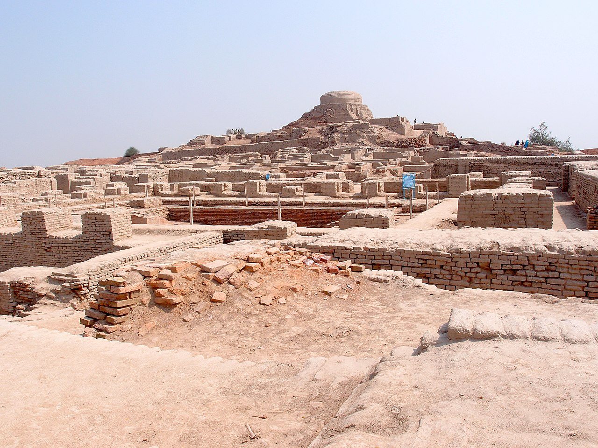

Indus
Terletak di kawasan lembah Sungai Indus
Lembah Sungai Indus mempunyai dua musim yang ekstrem musim hujan yang
membawa banjir dan musim kering yang membawa kemarau.
Kedua-dua musim ini
menyebabkan tanaman musnah.
Hujan lebat yang
berterusan menyebabkan berlakunya
banjir yang memusnahkan kawasan
petempatan.
Penduduk Lembah Sungai
Indus bergiat aktif dalam pertanian mereka menanam pokok gandum,
barli dan kapas.
Dalam masa yang
sama wujud kegiatan lain, seperti
pembuatan barangan daripada kapas
dan besi.
Kawasan ini kemudian berkembang
menjadi bandar.
Hujan lebat yang
berterusan menyebabkan berlakunya
banjir yang memusnahkan kawasan
petempatan.
